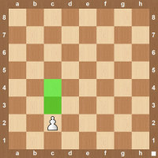
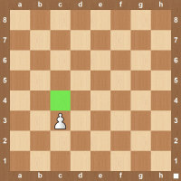
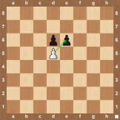

Pond


While the pawn is the weakest piece on the board, it serves a vital role in the game. Most of the early part of the game will be centered around the pawn structure and controlling the center of the board with your pawns. The other pieces will support the pawn in the early stages. The pawn is the only piece on the chess board that can’t go backwards. It is also the only piece where you can’t move it the same number of squares the entire game. The first time you move a pawn you can move it one or two squares. Once the pawn has moved you can only move the pawn one square after that. Another distinction is that while the pawn moves forward it can’t capture another piece right in front of it. It can only capture a piece diagonally, but it can’t move diagonally unless it is capturing a piece. When a pawn moves you will see the notation e5. This is different from other pieces in that you don’t see a letter specifying what piece is moving. If you only see a square that means the pawn is moving there. If a pawn from d5 is capturing a pawn on e6 then you would see the notation exd6.
How the Pond Moves
  